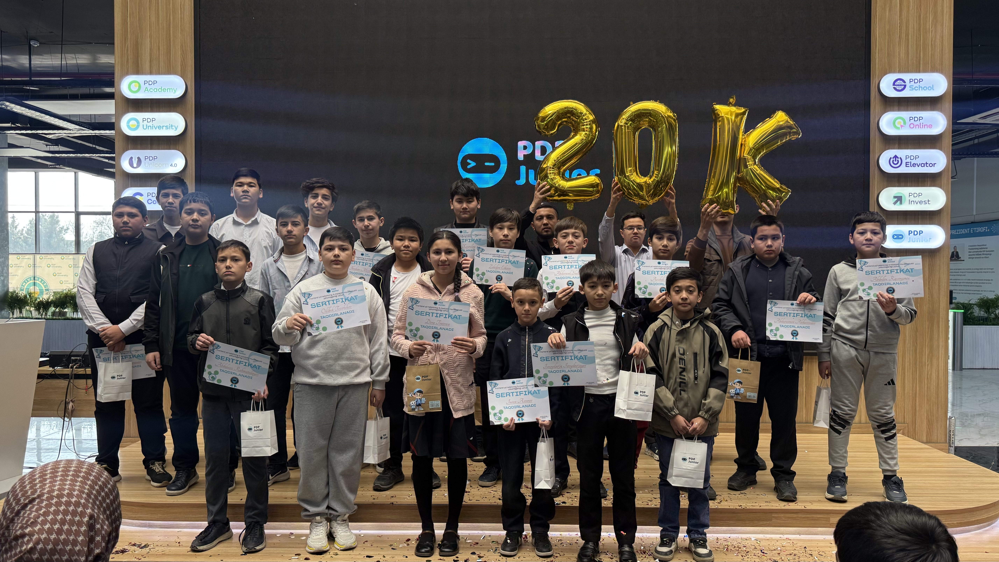

PDP Junior 2.0
Kelajak Liderlari Akademiyasi
"Vitamin"dan "Og'riq qoldiruvchi"ga o'tish: Ota-onalar xohlaydigan emas, farzandlar kelajagi uchun eng zarur bo'lgan ta'lim ekotizimi.
Bozordagi Hozirgi Muammo

Davlat maktablari
Sifatli ta'lim tizimi yetarli emas, ayniqsa viloyatlarda. Ota-onalar farzandining ertangi kunidan jiddiy xavotirda.

Xususiy maktablar
Juda qimmat. Asosiy to'lov miqdori ta'lim sifati uchun emas, balki bino hashamati, ovqat va yotoq joy uchun olinadi.

Hozirgi PDP Junior
Faqat IT va Robototexnika. Bu muhim, lekin ota-onalar nazdidagi "eng birinchi darajali ehtiyoj" emas. Qamrov cheklangan.

Bizning Yechim
Kompleks Qo'shimcha Ta'lim Markazi
To'liq shaxsiy rivojlanish
PDP Juniorni shunchaki IT-to'garakdan, farzandning har tomonlama yuksalishini ta'minlaydigan akademiyaga aylantirish.
Faqat sof va sifatli ta'lim
Katta bino, ovqat va yotoqsiz format. Biz faqat bolaning miyasiga sarmoya kiritamiz, qorniga emas.
Hamma uchun hamyonbop narx
Xarajatlarni optimallashtirish orqali ota-onalar uchun eng qulay narx siyosatini taklif qilish.
Micro-Schooling Modeli
Masshtablash (Tarmoq)
Katta binolardan voz kechamiz. O'rniga har bir tumanda joylashgan, uyga yaqin 4-5 xonali lokal filiallar tarmog'i ("Korzinka" modeli).
Yangi O'quv Formati
Haftada 5 kun, kuniga 2 soatdan intensiv mashg'ulotlar. Bolaning maktabdan keyingi vaqtini mazmunli o'tkazish uchun ideal.
Qamrov va Rentabellik
Har bir filial sig'imi 200-300 o'quvchi. Minimal operatsion xarajatlar evaziga tez o'zini oqlash va foydaga chiqish.


Kelajakni birga quramiz!
PDP Junior 2.0 orqali O'zbekiston ta'lim tizimida nafaqat yangi standart o'rnatamiz, balki eng tez o'suvchi tarmoqli biznesni barpo etamiz.